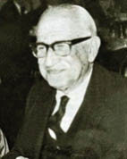

(1888 – 1965)

Refik Halit Karay Türk edebiyatında ilk defa Anadolu'yu tanıtan eserleri ile ismini duyurmuş, yergi ve mizah türündeki yazıları ile de ün salmıştır. Gözleme dayanan eserlerinde, tasvirler, portreler, benzetmeler kullanarak sade, akıcı dili, güçlü tekniği ile 20. yüzyıl romancıları arasında seçkin bir yere sahip olmuştur. Türkçeyi ustalıkla kullanan yazar, romanları, "Memleket Hikayeleri" ve "Gurbet Hikayeleri" kitapları başta olmak üzere, Türk edebiyatına birçok yapıt kazandırmıştır.
Türk edebiyatının kendine özgü kalemlerinden Refik Halit Karay 15 Mart 1888'de İstanbul'da doğdu. Mudurnu'dan İstanbul'a göçen Karakayış ailesinden Maliye Başveznedarı Mehmed Halit Bey'in oğludur. Galatasaray Sultanisi'nde (Lisesi'nde) ve Hukuk Mektebi'nde okudu. Maliye Bakanlığı'nda memur olarak çalıştı. II. Meşrutiyet'in ilanından sonra gazetecilik ile uğraşmaya başladı; Tercüman-ı Hakikat gazetesinde çevirmenlik ve muhabirlik yaptı. Fecr-i Ati edebiyat topluluğuna katıldı. Dönem yöneticilerine muhalefet eden yazıları yüzünden ilk önce Sinop'a daha sonra Çorum, Ankara ve Bilecik'e sürgün olarak gönderildi. İstanbul'a dönünce bir süre Türkçe öğretmenliği yaptı. PTT (Posta Telefon Telgraf) Genel Müdürlüğü'ne getirildi. Bu sırada Hürriyet ve İtilaf Fırkası'na üye oldu ve İstiklâl Savaşı aleyhine yazdığı yazılarından ötürü vatan hainliği suçuyla "150'likler" listesine girerek Beyrut ve Halep'te sürgün hayatı yaşadı. İstiklal Savaşı'nın özellikle ilk dönemlerinde İstanbul'daki bazı gazeteci ve yazarlar, ülkenin içinde bulunduğu durumu tam olarak kavrayamamış ve Milli Mücadele'ye bir "iç savaş" gözüyle bakıp ondan kaçınmıştı. Birçok insan da Cumhuriyetimizin ilk yıllarında Milli Mücadele boyunca aldıkları karşıt tavırlar yüzünden kimi haklı, kimi haksız yere vatan haini muamelesi gördü. Yazar Refik Halit Karay da sonraları "150'likler" adı verilen ve Milli Mücadele'ye karşı çıktıkları iddiasıyla ülke dışına sürülen bu insanlardan biri oldu. 15 yıllık sürgün hayatından sonra 1938'de af çıkarılmasıyla yurda dönebildi. Yeniden gazeteciliğe başladı. Aydede dergisini tekrar çıkardı.
Yazarlığa mizah öyküleriyle başlayan Refik Halit Karay, 1919'dan itibaren Türk öykücülüğünde yeni bir sayfa açtı. Sürgün olarak gittiği Anadolu'nun çeşitli kesimlerinden insanları canlandırdığı "Memleket Hikayeleri" 1919'da yayınlandı. Bu kitapla o güne kadar konuları İstanbul'la sınırlı olan öykücülüğü Anadolu'ya taşıdı. Bu yönüyle sonradan serpilip gelişen "köy edebiyatı"nın öncüleri arasına girdi. 1920'lerden sonra daha arı ve anlaşılır bir dil kullandı. Romancılığında iki ayrı çizgi etkindir. Yurtdışına gitmeden önce yazdığı "İstanbul'un İç Yüzü", en yetkin romanı sayılır. 1920'de yayımlanan bu romanda, birbirinden kopuk hikayeleri mozaikler halinde birleştirerek İttihat ve Terakki'nin işbaşına gelişinden I. Dünya Savaşı günlerine kadar olan İstanbul'u, bütün renk ve çizgileriyle yansıttı. Türkiye'ye dönüşünden sonra yazdığı romanlarda, daha çok bireyci, okunma kaygısı taşıyan, sanatı bir kenara bırakan ticari eserlere yöneldi. Bu romanlarda yurt gerçeklerinin yerini, Avrupa dışı ülkelerde geçen olaylar aldı.
Cumhuriyet döneminde çektiği yurt özlemi sonucu ülkesine dönme kararı alanlardan biri olan yazar Refik Halit Karay Atatürk'e yazdığı şiir ve mektuplarla zaman içinde hem kendini affettirdi hem de "150'likler" listesindekilerin affedilmesinde çok büyük rol oynadı.
18 Haziran 1965'te İstanbul'da vefat eden yazar, Zincirlikuyu Mezarlığı'nda toprağa verildi.
Romanları: İstanbul'un İç yüzü (1920), Ay Peşinde (1922), Yezidin Kızı (1939), Çete (1940), Sürgün (1941), Anahtar (1949), Bu Bizim Hayatımız (1950), Yeraltında Dünya Var (1953), Dişi Örümcek (1953), Bugünün Saraylısı (1954), İkibin Yılın Sevgilisi (1954), İki Cisimli Kadın (1955), Kadınlar Tekkesi (1956), Karlı Dağdaki Ateş (1956), Dört Yapraklı Yonca (1957), Sonuncu Kadeh (1965), Yerini Seven Fidan (yayımı ölümünden sonra: 1977), Ekmek Elden Su Gölden (ö.s. 1980), Ayın On Dördü (ö.s. 1980), Yüzen Bahçe (ö.s. 1981)